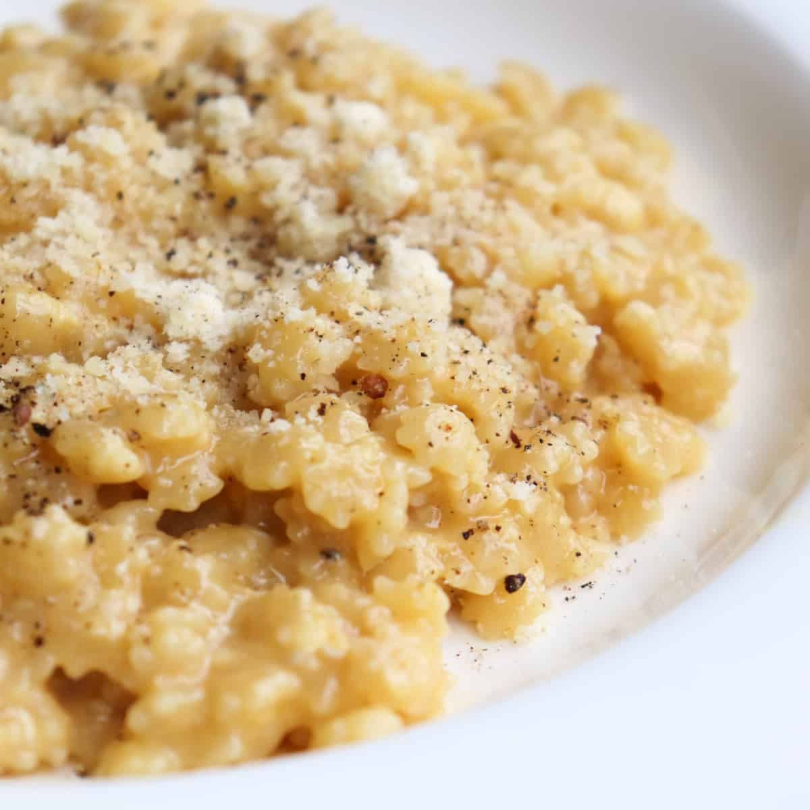

Homepage
Pastina

How would I make a serving of pastina? Below, you'll find my take on this easy-to-make and easy-to-eat dish. My goal was to make something a little more filling through the addition of bone broth for protein instead of using just water.
Ingredients
- 150g Chicken Bone Broth
- 125g Water
- 112.5g Pastina
- 1/4 teaspoon Diamond Crystal Kosher Salt, optional depending on how salty your bone broth and cheese is
- 20g Cheese, like Pecorino and/or Parmigiano
- 1/4 teaspoon Paprika
- 1/4 teaspoon Red Pepper Flakes
- 7g Unsalted Butter
- Freshly Ground Black Pepper, optional to your taste
Tools
- Medium Pot
- Silicone Spatula, or other mixing utensils
- Scale
- Measuring Spoons
- Bowl
- Knife
- Grater, optional but recommended
- Cutting Board or Plate, optional if grating cheese
- Silicone Mat, or any other heatproof slab, or a plate that is appropriate to the size of the bowl you're using
- Thermometer, optional but recommended
Tips Before Starting
- I highly recommend buying blocks of cheese and grating it yourself. It'll taste better, but it'll also not include starches that are often included in pre-shredded cheeses to prevent caking, so it'll melt better.
- I highly recommend investing in a thermometer, such as the Thermopen ONE to check the temperature of your pasta before adding in cheese. If too hot, the heat will make your cheese separate and cause a stringy mess to clean up at the end of your meal. It may seem like an expensive investment, but it'll help you with many tasks in your kitchen as you learn more. The Thermoworks brand in particular has good sales, especially on Black Friday, and a wide variety in pricing for different heat measuring equipment. You can start with one of their cheaper thermometers to see how you like it.
Steps
- Measure your bone broth and water in a medium pot, then place on your cooking top to bring to a boil. Optionally, add some salt, but be careful as your bone broth and cheeses will likely contain salt.
- In the meantime:
- Measure the pastina in your bowl.
- If already grated, measure your cheese onto a cutting board or plate.
- If you have access to blocks of cheese, place your board or plate with the grater on top onto the scale, then turn on. Take it off the scale and grate your cheese. Periodically, place it back onto the scale until you reach the desired amount of cheese.
- Measure your butter.
- When boiling, pour your pastina in and bring back up to a boil. Set your timer according to your pasta instructions, likely around 5-6 minutes cooking time. There should be a little bit of liquid left because the residual heat and soon-to-be-added cheese will thicken the mixture.
- When cooked to your preferred doneness, place your pot on a silicone mat or heatproof surface like an unused stovetop burner. Add paprika, red pepper flakes, and butter to the pastina and stir until well-incorporated.
- Wait a minute to cool down your mixture to below 165 degrees F, so you can add and incorporate about half of your cheese.
- Place a bowl on a heatproof surface, then pour your pastina from the pot into your bowl.
- Add some of your leftover cheese to the top and enjoy. I recommend topping off the cheese in your bowl as you eat, so you have some grated cheese in every bite. You may also optionally top off with some freshly ground black pepper. Take notes of how it tastes for future adjustments.
Tips For After Your First Try
- If you noticed there was not enough liquid at the end, adjust for more water. On the other hand, if there is too much liquid, adjust for less water.
- You can use all bone broth for more protein, but some people might not like such a deep and possibly overwhelming flavor.
- This is just a base recipe, so you can adjust in many ways like removing or adding spices.
- You can add an egg to your pastina after it's cooked for additional protein and a more velvety mouthfeel. You break the egg into a small bowl and scramble with a fork. When the pasta is done and cooled off a bit, you can add a spoon or two to the egg to bring up its temperature. Then you can add the eggy mixture into your pot of pastina. Be careful! If too hot, you will scramble your eggs! If successful, your pastina will be thick and saucy.
- Once again, I highly recommend a thermometer to lessen the worry of overheating your cheese and optional egg addition. It's a great tool to prioritize owning along with a scale.